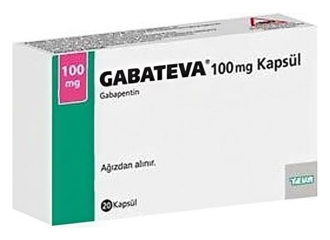

Gabateva 100 mg Kapsül, 20 Adet

Ne için kullanılır
KT · Bölüm 1• GABATEVA®diğer antiepileptik ilaçlar olarak adlandırılan ilaç grubundandır. Bu ilaçlar sara (epilepsi) ve sinir dokusunun hasarına bağlı ağrı (nöropatik ağrı) tedavisinde kullanılır. • GABATEVA®100 mg kapsül küçük aglomeratlar içeren, beyaz ya da beyazımsı toz ile dolu, kapak ve gövdesi gri renkli sert jelatin kapsüller halindedir. • GABATEVA®100 mg kapsül, 20 kapsül içeren ambalajlarda bulunur, her kapsül 100 mg gabapentin içermektedir. • GABATEVA®, başlangıçta beynin belirli kısımlarıyla sınırlı olan ve beynin diğer taraflarına yayılıp yayılmadığı belli olmayan değişik türlerdeki sara (epilepsi) nöbetlerinde kullanılır. Mevcut tedavi yeterli olmadığında, doktorunuz size ve 6 yaşından daha büyük olan çocuğunuza GABATEVA®reçete edebilir. Doktor aksini belirtmedikçe, siz veya 6 yaşından büyük çocuğunuz tarafından mevcut tedaviye ek olarak GABATEVA®kullanılmalıdır. Ayrıca GABATEVA®12 yaş üzeri çocukları ve yetişkinleri tedavi etmek için tek başına kullanılabilir. • GABATEVA®, sinir dokusunun hasarına bağlı ağrı (periferik nöropatik ağrı) tedavisinde kullanılan bir ilaçtır. Diyabet veya zona gibi pek çok farklı hastalık (temel olarak bacaklarda ve/veya kollarda görülen) periferik nöropatik ağrıya neden olabilir. Ağrı hissi; sıcak, yakıcı, zonklama, çarpıntı, ateş, bıçak saplanması hissi gibi, acı, kramp girmesi, ağrı, karıncalanma, hissizlik, uyuşma, batma ve donma gibi çeşitli şekillerde tanımlanabilir.
Bu ilacı kullanmaya başlamadan önce bu KULLANMA TALİMATINI dikkatlice okuyunuz, çünkü sizin için önemli bilgiler içermektedir. • Bu kullanma talimatını saklayınız. Daha sonra tekrar okumaya ihtiyaç duyabilirsiniz. • Eğer ilave sorularınız olursa, lütfen doktorunuza veya eczacınıza danışınız. • Bu ilaç kişisel olarak sizin için reçete edilmiştir, başkalarına vermeyiniz. • Bu ilacın kullanımı sırasında, doktora veya hastaneye gittiğinizde doktorunuza bu ilacı kullandığınızı söyleyiniz. • Bu talimatta yazılanlara aynen uyunuz. İlaç hakkında size önerilen dozun dışında yüksek veya düşük doz kullanmayınız.
Bu ürün sığır kaynaklı jelatin içerir. Doktorunuza danışmadan ilacınızı kullanmayı bırakmayınız.